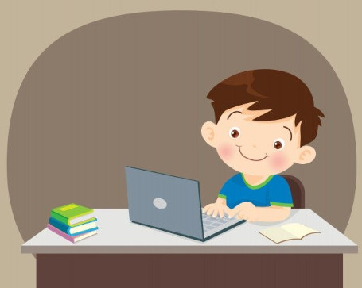

Meu primeiro site
Conheça três iniciativas que colocam os estudantes como protagonistas dos estudos
Desde que a pandemia fez a transição da sala de aula para os lares, muitos segmentos precisaram se adaptar, em especial o de educação e, com isso, surgiram novas formas de aprender e educar, como programação, integração do online e offline, aulas abertas à experimentação.
Para Roberto Moreno, Diretor Pedagógico da BYJU’S FutureSchool, maior edtech do mundo em educação interativa online, a nova realidade trouxe a oportunidade de adotarmos tendências digitais no Brasil. “A tecnologia educacional se concentra na conectividade, versatilidade e aprendizado direcionado ao aluno”, ressalta.
Confira abaixo a lista do executivo com as principais iniciativas de aprendizado que colocam os estudantes em destaque.
Principais iniciativas
- Novas metodologias de ensino
Técnicas como a gamificação, projetos e programação inseridas no ensino podem estimular a criatividade e proporcionar mais autonomia aos estudantes. “Certificar que a criança pode ser dona do seu próprio método de aprendizado vai muito além de aprender o conteúdo da escola. A gamificação no contexto educacional, por exemplo, tem sido cada vez mais utilizada em demandas de salas de aula. É um processo atraente que envolve os pequenos na hora de estudar”, afirma Moreno.
- Incorporação de diferentes estilos de aprendizagem
Caderno, livro e agenda. Para quem não dispensa o mundo offline, as tecnologias chegaram para agregar e não para delimitar o processo de aprendizado, do mesmo modo que a educação online complementa as aulas presenciais. “A aplicabilidade das ferramentas digitais pode ajudar a melhorar a comunicação entre alunos e professores. Com o avanço da tecnologia, as salas de aula agora recebem um ambiente de aprendizado que vai além do mundo físico, permitindo que professores possam explorar mais recursos digitais multissensoriais que suportam estilos de aprendizagem visuais, auditivos e cinestésicos”, ressalta o executivo.
- Abertura à experimentação
A oportunidade de experimentar é fundamental para qualquer iniciativa. Para que as novas metodologias de ensino sejam envolventes, os pequenos estudantes devem se sentir parte. “Oferecer aula teste é uma ótima maneira de garantir engajamento e motivação aos alunos. Assim, o processo de aprendizagem pode se tornar mais fácil com essa abordagem”, finaliza Moreno.
Leia a matéria na integra clicando aqui.